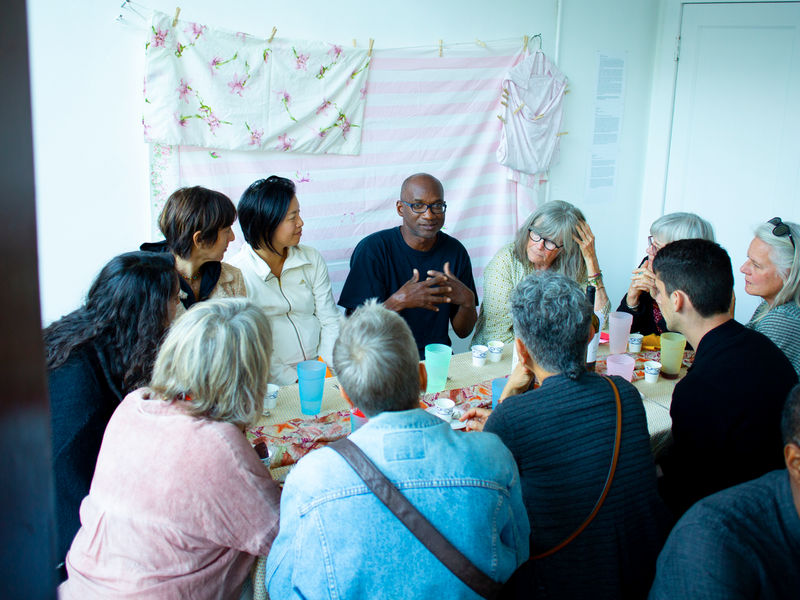

Borderless Imaginary Dinner
Sunday September 16, 2018
In these days of wildfires and wild actions, we are enacting the power of community building, poetics and both direct and obscure artful actions. Towards this end, we would love to invite you to a Borderless Imaginary Fundraising Dinner at Dream Farm Commons.
A ranging multi-course meal created by several artists and cooks with each course built around crazy beautiful flavors, performative elements, border questions and exploration of sensory combinations: how samosas from India relate to empanadas from Argentina, how a California tomato talks to a speck of saffron from Iran, how a glass of water or graceful poetics can quench thirst, how bloated economy, militarized borders and teetering ecology can make us cry at the same time as our friends can make us laugh... It will be an amazing meal, a strange experience and an artful evening. While we are raising ethereal borderless questions today, we are fundraising for a realtime border project, that will travel, Mexico to Oakland.
For this dinner, the East Bay Community Foundation will match whatever we raise. We are vitally aware of questions of distribution and know that our friends and community operate within vastly different economies -- so what would a stretch of a dinner out, artful event AND a contribution be for you..? The intent of the evening is to break bread, make beauty, and support our next year of building exhibitions, conversations, and a collective future imaginary.
Photographs by Cara Levine
